Reusable editing workflows that a creator’s own AI assistant runs inside their editing software, with the creator approving every result. From an initial idea to an incubation proposition, in five reports.
| Roll number | 25120989 |
| Submission | Final project: Reports 1–5 with appendices |
| Video pitch | youtube.com/watch?v=SlrPQ5JF8vY (also in Report 4) |
| Editable deck | Submitted with this PDF as 25120989_EditFlo_Pitch_Deck.pptx |
| Section | Weight | Page |
|---|---|---|
| Report 1 · Initial idea, Lean Canvas 1 and hypotheses | 15% | – |
| Report 2 · First-round interviews, Lean Canvas 2 and hypothesis update | 20% | – |
| Report 3 · Second-round interviews, Lean Canvas 3 and insights analysis | 20% | – |
| Report 4 · Final incubation pitch: presentation and video pitch | 30% | – |
| Pitch deck (13 slides) | – | |
| Video pitch | – | |
| Product walkthrough, how EditFlo works, business model and validation | – | |
| Report 5 · Handwritten reflection | 15% | – |
| Appendix A · Interview log, method and coding | – | |
| Appendix B · Interview evidence and screenshots | – |
Customer discovery produces different kinds of statements. To keep them apart, each finding is labelled consistently:
| Observed | What a participant described, as recorded in the researcher’s notes. |
| Interpretation | What that experience may mean for EditFlo. A judgement, not a fact. |
| Hypothesis | An assumption that still needs testing. |
| Proposed | Something EditFlo intends to build or offer. |
| In prototype | Partly built by the founder, but not yet tested with pilot users. Nothing in this document is presented as a validated, deployed capability. |
Defines the original idea for EditFlow, the problem it was assumed to solve, and the assumptions to test before building anything.
EditFlow was proposed as a set of ready-to-use video-editing workflows built around the OpenFilm editing environment and MCP-based AI-assistant integrations. (MCP, the Model Context Protocol, is an open standard that lets an AI assistant connect to external tools. Report 4 explains the architecture.) The intended outcome was to help beginners move from an idea or raw footage to a finished video with less technical effort. The offering could include workflow packages, installation and configuration help, and optional support.
The product is not simply the sale of an MCP connection. It is a guided editing workflow intended to reduce the gap between wanting to publish and actually producing a video. Which steps can really be automated had to be tested against the tools available.
The initial problem hypothesis was that some aspiring creators postpone or avoid publishing because editing feels like a separate skill they must master. Three related barriers were proposed:
Current alternatives include online tutorials, basic mobile editing apps, templates, freelance editors, or not publishing at all. These were to be explored in interviews rather than assumed.
The initial segments were aspiring YouTubers, beginner short-form creators, working professionals building an online presence, and entrepreneurs or personal brands who want to publish without spending substantial time editing. The proposed early adopters were people who already have content ideas or raw footage but repeatedly delay publishing because of editing.
Each hypothesis is linked to the canvas block it tests, with the kind of evidence that would support or weaken it. This set the evaluation rules used in Report 2.
| ID | Hypothesis | Canvas block | Would support it | Would weaken it |
|---|---|---|---|---|
| H1 | Aspiring creators hesitate to publish because they lack video-editing skills. | Problem | Beginners describe delaying or abandoning posts because they do not know how to edit. | Delays come from other causes, or experienced creators face the same barrier. |
| H2 | Beginners worry that their videos will look unprofessional. | Problem | Beginners describe comparing their work with established creators or holding back for quality reasons. | Quality pressure is absent, or found mainly among experienced creators. |
| H3 | Learning and performing editing takes too much time and effort. | Problem | Long editing times, fatigue or effort described as a burden. | Editing described as quick or manageable. |
| H4 | Editing difficulties prevent some beginners from publishing consistently. | Problem · Segments | Gaps or breaks in publishing attributed to editing. | Consistent publishing despite editing difficulty. |
| H5 | Some beginners are interested in AI-assisted tools that simplify editing. | Solution | Prior use of, or active interest in, AI editing tools. | No interest, or distrust of AI output. |
| H6 | A subset of potential customers may pay for ready-to-use editing workflows or setup support. | Revenue | Past spending on editing help, or a stated budget for tools. | No spending; strong preference for free tools. |
The first validation round would use short, open-ended conversations with people who have created or considered creating online video. Questions would focus on past behaviour: whether they had tried creating videos, what difficulties they met, how they currently edit, how long editing takes, and whether editing had caused them to delay or abandon a post. EditFlow would not be pitched early, and participants would not simply be asked whether they liked the idea.
EditFlow began as a hypothesis about the gap between wanting to publish video content and having the skills, confidence and time to edit it. The next step was not to assume the solution was needed, but to test how often these problems occur, which segment feels them most, and whether existing alternatives are inadequate.
Five exploratory conversations tested the Report 1 hypotheses. The main finding: the problem is not limited to beginners who lack skills. Experienced creators also struggle with the effort of production.
Five informal customer-discovery conversations were held with people at different levels of content-creation and editing experience, recruited from the researcher’s own contacts. The topics followed the Report 1 validation plan and focused on past behaviour. Participants are anonymised as A–E. The records are concise notes written from the researcher’s recollection of each conversation; they are not verbatim transcripts.
| ID | Profile | Relevant experience | Method |
|---|---|---|---|
| A | Former Instagram page operator and long-form creator | Ran a motivational and sportsmanship-themed page and made longer storytelling videos; previously paid for editing help. | Text conversation |
| B | Third-year MBBS student and experienced editor | Previously freelanced; edits independently at an advanced level; has tried AI editing tools. | Text conversation |
| C | Former YouTuber and gym-content creator | Made fitness videos, generally edited on a phone; limited by equipment and workload. | In person |
| D | Full-time performance-marketing educator | Publishes weekly educational videos on Meta advertising, campaigns and platform updates. | Phone |
| E | Aspiring short-form creator | Uses CapCut; reported a first video with about 3.4 million views; experiments with styles. | Phone |
ObservedHe ran an Instagram page of motivational, sportsmanship and everyday-life content and also made longer storytelling videos. Academic commitments and later mental fatigue made it hard to keep posting, and he is currently on a break. A single short took about 1–1.5 hours to edit, most of it spent going through footage and picking what was usable. He had hired an editor at about ₹1,500 per post but found the cost too high. Editing alone was time-consuming, he lacked a suitable PC, and subscription costs were a concern. He named finding A-roll and B-roll, choosing music and sound effects, trimming, removing pauses and filler words, and building a coherent timeline as frustrating tasks.
ObservedHe has professional-level editing experience and previously freelanced, but medical studies now limit his time. He described a perfectionist approach, comparing alternatives and considering the audience before finalising. He estimated about 30 minutes of work per finished minute for short-form video and about 10–15 minutes per finished minute for long-form. He has tried AI tools but found token-based pricing potentially expensive, with bugs and inconsistent visual output. He would value an assistant-editor-like system that finds relevant footage, aligns it with the intended objective and timeline, and reduces repetitive trimming.
ObservedHe made YouTube and gym videos and generally edited on a phone because he had no suitable laptop. Work, studies and moving city made it hard to continue. He described mental fatigue and pressure to produce high-quality videos. He sometimes filmed several angles but used only a small proportion of the footage. He wanted help that understands his creative vision, helps plan a storyboard and identifies useful footage.
ObservedHe is a full-time creator publishing educational videos on performance marketing, Meta advertising and platform updates, roughly weekly, with students asking for more. His difficulty is not balancing content with another job. It is mental fatigue from handling ideation, planning, recording, reviewing unsuccessful takes, selecting usable footage, editing and publishing himself. He wants something closer to a director: evaluating ideas, supporting SEO-oriented planning, finding relevant B-roll and improving sound quality. He finds it hard to be both strategist and executor of every task.
ObservedHe uses CapCut and describes his editing skills as moderate. His first video reportedly received about 3.4 million views; since then he has struggled to feel satisfied with videos that do not perform similarly, and sometimes deletes underperforming ones. He spends time copying the editing approaches of popular YouTubers and combining styles, and feels that reaching the quality he wants takes too much effort. He would like a tool that helps him make polished videos more easily.
“Supported” means the interview accounts gave relevant evidence, judged against the criteria in section 1.5. It does not mean statistically proven.
| Hypothesis | Assessment | Evidence |
|---|---|---|
| H1 Aspiring creators hesitate because they lack editing skills | Partially supported | A and C described limits in equipment or editing capability. B and D show the problem also affects people who can edit well. |
| H2 Beginners worry their videos will look unprofessional | Partially supported | Quality pressure was common (B, C, D, E), but mostly among experienced creators. Only E is a beginner, so the hypothesis was framed too narrowly around beginners. |
| H3 Editing takes too much time and effort | Supported | All five described editing or the wider production process as demanding, time-consuming or tiring. |
| H4 Editing difficulty prevents consistent publishing | Partially supported | A is on a break and C struggled to keep producing. D keeps publishing weekly despite fatigue, so the effect varies. |
| H5 Beginners are interested in AI-assisted editing tools | Inconclusive | B has tried AI tools but reported limitations. Others described the help they want but did not confirm adopting an AI tool. |
| H6 Some customers may pay for workflows or setup support | Inconclusive | A hired an editor at about ₹1,500 per post but found it too expensive. That shows spending on editing, not willingness to pay for EditFlow. |
The interviews suggest the original problem statement focused too narrowly on beginners who lack skills. Planning, footage selection, creative decisions and repetitive editing create effort for beginners and experienced creators alike. Five new hypotheses were generated:
| H7 | Creators value intelligent footage selection and organisation. |
| H8 | Creators want an assistant that understands and follows their creative direction. |
| H9 | Pre-production help, including storyboarding and shot planning, reduces production effort. |
| H10 | Experienced and full-time creators value AI assistance even when they already have editing skills. |
| H11 | Some educational creators value content research and SEO help alongside editing. |
Blocks outlined in purple changed after the first round.
The first round suggests the problem extends beyond a lack of editing skills. Participants described the mental and practical burden of the full production process, from planning to quality decisions. This supports investigating an assistant-editor approach, but it does not yet establish demand for a specific AI product or willingness to pay.
The second round would test which tasks creators would trust an assistant with, what level of control they need, and whether any segment would pay. The technical feasibility of OpenFilm and MCP workflows also had to be checked before making product claims.
Follow-up conversations with A, B and D narrowed EditFlo from a broad “AI content director” to an editing-focused assistant that does repetitive work, follows instructions and leaves the creator in control. The working name became EditFlo.
Participants A, B and D were re-interviewed to go deeper into their first-round accounts. These are follow-ups, not three new customers: the study still has five unique participants. C and E were not re-interviewed in this round. The conversations focused on which editing tasks participants would delegate, how much control they would require, and what they expect in cost and usefulness. As before, the records are summaries written from recollection, not verbatim transcripts.
ObservedMuch of his editing time goes on finding suitable templates and 3D assets (including Blender assets) and combining videos, photos, memes and overlays. Cutting and trimming are the tasks he would most like to eliminate. He judges footage against each project’s objective and noted that non-essential footage sometimes stays in. Asked whether he would use an automatic editing bot, he said “it depends. the final edit stays with me” and “what i need changes every project”. He was sceptical that AI could adapt to that, but said “if it adapts im all for it”, so an assistant would need to adapt to the style of each project. He would welcome suggested B-roll “if it matches my style”. He currently uses AI tools for video generation (Seedance and Google Flow). Storyboarding could help, but he already uses ChatGPT for ideation and planning and prefers an editing-focused assistant. He pays for Adobe Creative Cloud. On how an editing assistant should work, he asked for a simpler interface and low cost: “subscription is fine but token stuff is a straight no for me”.
ObservedHe described the effort of editing long-form video while keeping important information and viewer engagement. Trimming takes much of the time, because only selected parts of a long recording are needed; for short reels he trims roughly every 15 seconds to keep retention. How selective he is depends on how much footage he has: with little, he uses more of it; with plenty, he can be choosier. The final video must keep the important speaking sections and key points. He is comfortable with substantial AI editing help and does not need AI-generated B-roll or separate planning support.
ObservedAlongside his educational videos, he regularly produces sponsored content, often from scripts and product-presentation instructions supplied by companies. Because this content is scripted, he can give the footage, script and his own instructions to guide the edit. Different sponsors and concepts call for different visual styles, so he would expect a workflow to adapt its treatment to each project. He would most like to delegate B-roll insertion and repetitive editing. He is comfortable with AI trimming that follows his instructions, but wants to restore a section manually if it is shortened or removed. He questioned whether generating several alternative clips would waste processing time and token costs, and said he would pay only if the workflow produces useful results.
| Assumption before the second round | What the follow-ups showed | Source |
|---|---|---|
| The core problem is a lack of editing skill. | For creators who can edit, the burden is repetitive execution: trimming, cutting, organising footage and inserting assets. | A, B, D |
| EditFlo could be a broad AI “content director” covering ideation, storyboards, SEO and editing. | Planning and SEO are not core. B already uses ChatGPT for planning; A and D did not identify planning as essential. | A, B, D |
| AI should automate as much as possible. | AI should follow instructions and be correctable. The acceptable level of autonomy differs by person. | A, B, D |
| One editing approach fits all projects. | The visual style must adapt to each video’s concept. | B, D |
| B-roll is part of every workflow. | B-roll is optional: wanted by B and D, not by A. | A, B, D |
| Pricing structure was open. | Cost must be predictable; token-based or wasteful processing is a barrier. | B, D |
The same three people (A, B, D) were asked about their priorities in both rounds. The comparison shows how the focus moved from the whole production process to editing execution.
| Hypothesis | Assessment | Evidence |
|---|---|---|
| H7 Creators value footage selection and organisation | Partially supported | A and B described footage-selection needs; D prioritised B-roll insertion. Requirements differ by project. |
| H8 Creators want an assistant that follows their creative direction | Supported | B and D stressed instructions, creative intent and project style; A prioritised keeping key information. |
| H9 Pre-production help reduces effort | Lower priority | B saw storyboarding as possibly useful but not needed in an editing product; A and D did not see it as essential. |
| H10 Experienced creators value AI editing assistance | Supported | B and D named specific tasks they would delegate; A wants substantial editing help. |
| H11 Creators value SEO and research alongside editing | Inconclusive | Not established as a priority for the product in the follow-ups. |
Three new hypotheses were generated for the pilot proposed in Report 4. They are untested.
| H12 | Creators prefer predictable pricing (one-time or a flat monthly fee) to usage-based pricing. | To test |
| H13 | Instruction-led trimming with protected sections produces a rough cut that creators accept with limited corrections. | To test |
| H14 | Regular creators of recurring formats (educational, personal-brand, sponsored) are the most responsive early segment. | To test |
These are patterns in a small sample, not causal correlations.
The second round supports narrowing EditFlo to an instruction-led editing workflow. The core is repetitive editing execution: trimming and cutting, organising footage, preserving specified sections, adapting to each project’s style, and optional B-roll, always with creator review. Storyboarding, SEO and ideation are not core at this stage.
ProposedEditFlo is a hybrid product. The customer receives a downloadable workflow repository, which they set up once with their own compatible AI assistant and editing environment, plus access to a web library to browse, save and configure workflows. Installation, configuration and support can be offered separately. Because B and D rejected unpredictable, token-based costs, pricing should be flat and predictable. Two such options are carried into Report 4 for testing: a one-time purchase and a low-commitment monthly plan. Either way, customers still pay separately for their own AI assistant and software.
Blocks outlined in purple changed after the second round.
The second round strengthened the case for an editing-focused product. Returning participants named tasks they would delegate (trimming, footage organisation, B-roll insertion) and stressed creator intent, project style, configurable AI autonomy and predictable cost. The next stage is to check the technical reliability of the workflow on real footage, measure time saved, and obtain evidence of use or payment. Product-market fit is not yet proven.
EditFlo seeks incubation support to run a structured pilot with regular creators. This report contains the pitch presentation, the video pitch, and supporting detail on the product, technology, business model and validation plan.
https://www.youtube.com/watch?v=SlrPQ5JF8vY
The video pitch presents the founder, the problem, the product and the pricing test, using the same evidence and visual identity as the presentation.
▶ Watch the EditFlo video pitch on YouTubeOpens youtube.com in your browserAlternative link (copy and paste): https://www.youtube.com/watch?v=SlrPQ5JF8vY
The three screens below are a conceptual prototype: high-fidelity designs of the proposed web library, not deployed software. Each one connects to a finding from customer discovery.
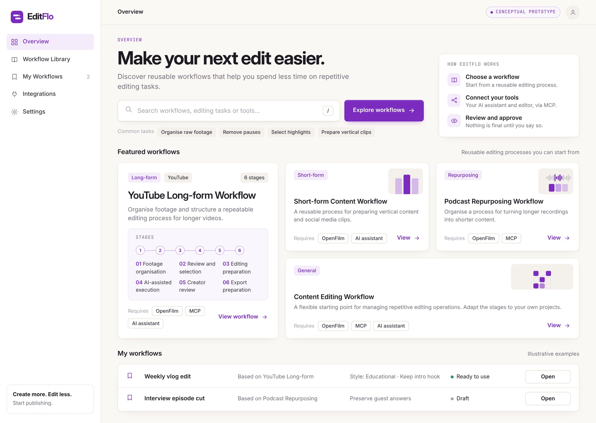
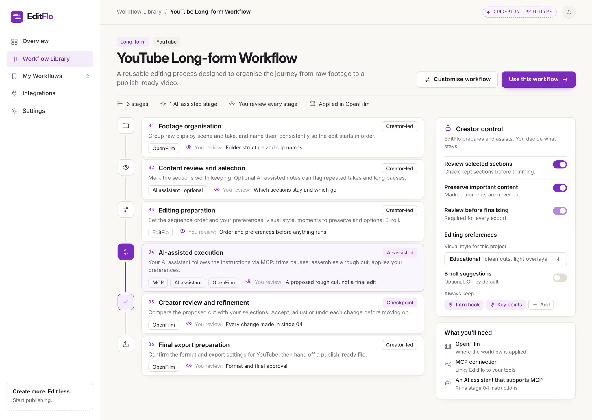
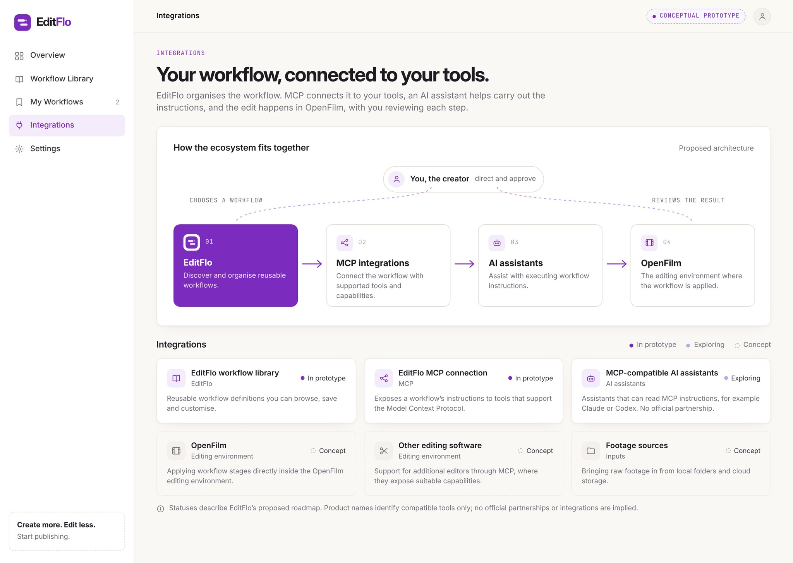
EditFlo is the recipe, the AI assistant is the cook, and the editing software is the kitchen. The creator chooses the recipe, says what must not change, and tastes the result before it is served.
| # | Component | What happens |
|---|---|---|
| 1 | EditFlo workflow repository + web library | The creator picks a workflow (for example, YouTube long-form) and sets the objective, visual style, protected sections and whether B-roll is wanted. |
| 2 | MCP Model Context Protocol | An open standard that lets AI assistants connect to external tools. EditFlo uses it to give the workflow’s instructions to the creator’s AI assistant in a structured form. |
| 3 | Compatible AI assistant | The creator’s own MCP-compatible assistant follows the instructions for the AI-assisted stage, such as trimming pauses and assembling a rough cut. The creator pays for this assistant separately. |
| 4 | OpenFilm editing environment | The video-editing environment EditFlo’s workflows are designed around. The proposed edits are applied here. Support for other editors is a later concept. |
| 5 | Creator review | The creator compares the proposed cut with their selections and accepts, adjusts or undoes each change. Nothing is finalised without approval. |
| Component | Status | What this means |
|---|---|---|
| Workflow repository (workflow files) | In prototype | Partly built by the founder. Not yet tested in a structured pilot. No demonstration is attached to this submission. |
| EditFlo MCP connection | In prototype | Partly built, as above. |
| MCP-compatible AI assistants (for example, Claude or Codex) | Exploring | Compatibility is being explored. No official partnership. |
| Web library (the screens in 4.3) | Concept | High-fidelity design only. |
| OpenFilm integration, other editors, footage sources | Concept | Proposed; requires technical validation. |
| Element | Proposal |
|---|---|
| What the customer gets | A downloadable workflow repository, set up once with their own AI assistant and editor, plus access to the web library to browse, save and configure workflows. |
| Pricing test | ₹3,000 one-time (for creators who prefer a single payment) vs ₹500 per month (a lower-commitment way to start). Both are hypotheses to be tested in the pilot (H12). |
| Optional add-ons | Installation and configuration; technical support. |
| Customer’s other costs | Their own compatible AI assistant and editing software, paid separately. EditFlo must state these requirements clearly before purchase. |
| Cost structure | Workflow development and maintenance, compatibility testing, documentation, web library hosting, customer support and marketing. |
| Channels | Creator and editor communities, before-and-after demonstrations on YouTube and Instagram, direct outreach to regular creators, and referrals from pilot users. |
The pricing responds to the clearest commercial signal in the interviews: B and D rejected unpredictable, token-based costs. A flat price makes EditFlo’s cost easy to judge. As a reference point only, Participant A paid about ₹1,500 per post for an editor and found it too expensive. That is one person’s experience, and EditFlo does not replace an editor.
HypothesisStill unvalidated: which option creators choose; what the one-time price includes (update period, support duration, what happens if compatible tools change); and the total cost to the creator once AI usage is added.
Creators can edit manually, hire freelancers, use general-purpose AI tools, or rely on features in their editing software. EditFlo’s intended difference is repeatable, instruction-led workflows with protected sections and review checkpoints, built for creators who edit the same kind of video again and again (slide 9). This is a hypothesis. It must be tested side by side against the alternatives on the same tasks, including the built-in automation of mainstream editing tools, which this project has not yet researched.
A small pilot with regular creators using their own projects. Each participant provides raw footage, editing instructions and the sections or visual references that must be preserved.
| Measure | What to record | Why it matters |
|---|---|---|
| Setup | Installation success, setup time and compatibility issues. | Tests whether the workflow is practical to adopt. |
| Editing effort | Usual editing time vs assisted editing time; repetitive steps completed. | Tests whether the workflow reduces repetitive work. |
| Creator control | Protected sections retained; corrections made; edits accepted. | Checks that the output respects creator intent (H13). |
| Output quality | Creator satisfaction, rework and final approval. | Checks usefulness, not simply the amount of automation. |
| Commercial | Purchases or deposits; choice between ₹3,000 one-time and ₹500 monthly. | Separates stated interest from willingness to pay (H12). |
| Segment | Which creator types complete the pilot and continue using it. | Tests the beachhead segment (H14). |
EditFlo requests support in four areas: technical mentorship on MCP and editing-environment integration; access to pilot creators producing recurring formats; AI usage credits so that pilot edits do not pass token costs to participants; and business guidance on pricing, workflow licensing and go-to-market.
EditFlo addresses a practical problem found in customer discovery: creators can have the ideas and the skills, yet lack the time and energy for repetitive editing. Its opportunity is to become a reliable assistant-editor workflow that follows instructions, adapts to each project and keeps the creator in control. The early signals are promising. Commercial potential depends on technical reliability, measurable time savings and proven willingness to pay, which is what the pilot is designed to test.
Submitted as a handwritten personal reflection, as the assignment requires. A typed transcription follows the handwritten pages for legibility; it reproduces the handwritten text without additions.
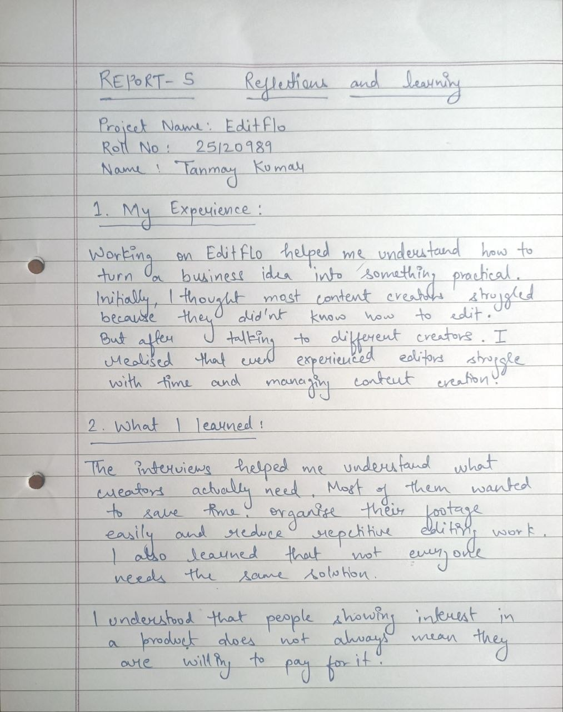
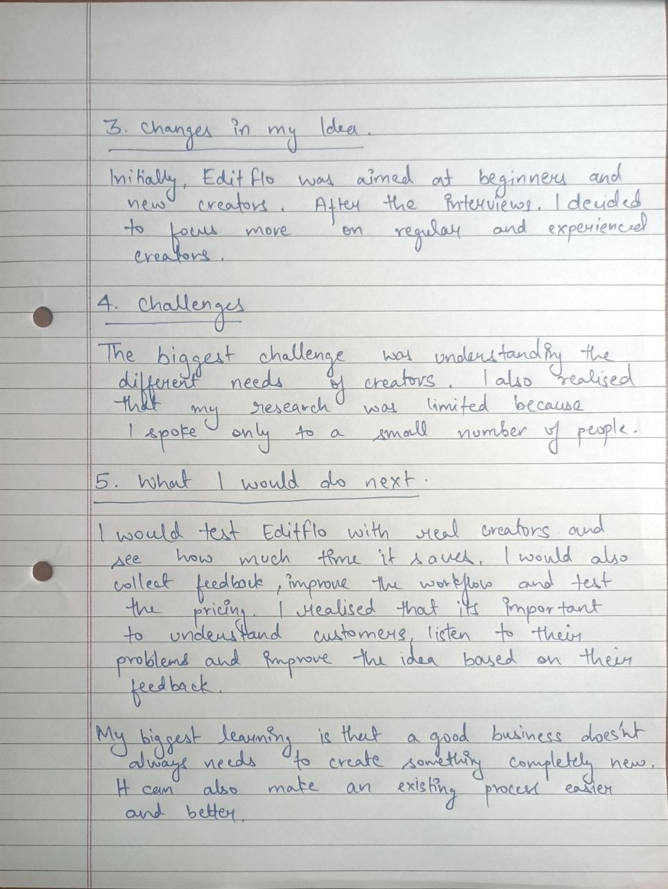
Report 5 · Reflections and learning · Project: EditFlo · Roll No. 25120989
Working on EditFlo helped me understand how to turn a business idea into something practical. Initially, I thought most content creators struggled because they didn’t know how to edit. But after talking to different creators, I realised that even experienced editors struggle with time and managing content creation.
The interviews helped me understand what creators actually need. Most of them wanted to save time, organise their footage easily and reduce repetitive editing work. I also learned that not everyone needs the same solution.
I understood that people showing interest in a product does not always mean they are willing to pay for it.
Initially, EditFlo was aimed at beginners and new creators. After the interviews, I decided to focus more on regular and experienced creators.
The biggest challenge was understanding the different needs of creators. I also realised that my research was limited because I spoke only to a small number of people.
I would test EditFlo with real creators and see how much time it saves. I would also collect feedback, improve the workflow and test the pricing. I realised that it’s important to understand customers, listen to their problems and improve the idea based on their feedback.
My biggest learning is that a good business doesn’t always need to create something completely new. It can also make an existing process easier and better.
How the interviews were conducted and how the counts in Reports 2 and 3 were produced.
| ID | Profile | Round 1 | Round 2 | Record |
|---|---|---|---|---|
| A | Former Instagram page operator, long-form creator | Text conversation | Follow-up | Researcher’s notes, written from recollection after each conversation and summarised in Reports 2 and 3. For A and B, original chat screenshots are reproduced in Appendix B. |
| B | MBBS student, experienced freelance editor | Text conversation | Follow-up | |
| C | Former YouTuber, gym-content creator | In person | — | |
| D | Full-time educator, also produces sponsored content | Phone | Follow-up | |
| E | Aspiring short-form creator | Phone | — |
Five unique participants; eight conversations in total. Participant identities are anonymised.
A participant was counted under a theme only when their written summary (Reports 2 and 3) explicitly described a related experience, need or concern. A participant can appear under several themes. Counts are reported against the number of people asked in that round (5 in the first round, 3 in the follow-ups) and are shown as dots or fractions, never percentages.
| Theme | Count | Coded from |
|---|---|---|
| First round (A–E) | ||
| Time, effort or mental fatigue | 5 of 5 | A editing time and fatigue · B limited time, perfectionism · C fatigue · D managing every role · E effort to reach quality |
| Finding, selecting or organising footage | 4 of 5 | A finding A-roll/B-roll · B finding relevant footage · C selecting useful angles · D selecting usable footage |
| Quality pressure or perfectionism | 4 of 5 | B perfectionism · C pressure for high quality · D quality and retention (hypothesis notes, section 2.4) · E dissatisfaction, polished output |
| Wants help that follows creative direction | 3 of 5 | B align with objective · C understand his vision · D director-like help |
| Equipment or cost constraints | 3 of 5 | A PC and subscriptions · B token-based pricing · C no laptop |
| Wants planning or pre-production help | 2 of 5 | C storyboarding · D idea evaluation and SEO planning |
| Has used AI editing tools | 1 of 5 | B |
| Has paid for editing help | 1 of 5 | A (about ₹1,500 per post; found it too costly) |
| Follow-ups (A, B, D) | ||
| Wants repetitive execution delegated | 3 of 3 | A trimming · B cutting and trimming · D B-roll and repetitive editing |
| Creator intent must be respected | 3 of 3 | A keep key sections · B full creative control · D follow instructions, restore sections |
| Stated an acceptable level of AI autonomy | 3 of 3 | A substantial · B full control kept · D instruction-led with correction |
| Wants B-roll help | 2 of 3 | B, D (A declined) |
| Style must adapt to each project | 2 of 3 | B, D |
| Concerned about AI or processing cost | 2 of 3 | B token pricing · D unnecessary generations |
| Wants planning support in the product | 0 of 3 | B uses ChatGPT for planning; A and D did not ask for it |
The assignment asks for interview proof such as transcripts or screenshots. This appendix states plainly what evidence exists, so that summaries are not mistaken for original records.
| Evidence type | Included | Notes |
|---|---|---|
| Researcher’s interview summaries | Yes | Reports 2 (A–E) and 3 (A, B, D), with observed accounts separated from interpretation. |
| Screenshots of the text conversation with A | Yes | Two screenshots, reproduced below and anonymised. |
| Screenshots of the text conversation with B | Yes | Four screenshots, reproduced below and anonymised. |
| Recordings of phone and in-person conversations | No | These conversations (C, D, E, and the follow-up with D) were not recorded; only the researcher’s notes exist. |
Apart from the screenshots below, the interview findings should be read as the researcher’s documented account of the conversations. All product screens in Report 4 are design prototypes, not interview evidence or proof of deployed functionality.
Unedited screenshots of the original Instagram conversation, cropped only to remove the participant’s name, username and profile pictures. Purple messages are the researcher’s; grey messages are Participant A’s. The thread covers topics from both rounds: editing time, footage selection and paying an editor, then automated trimming, protecting key explanations and B-roll.
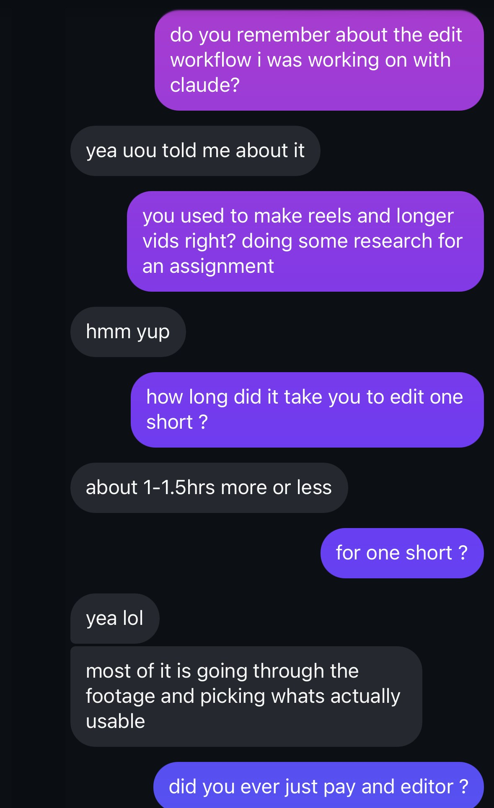
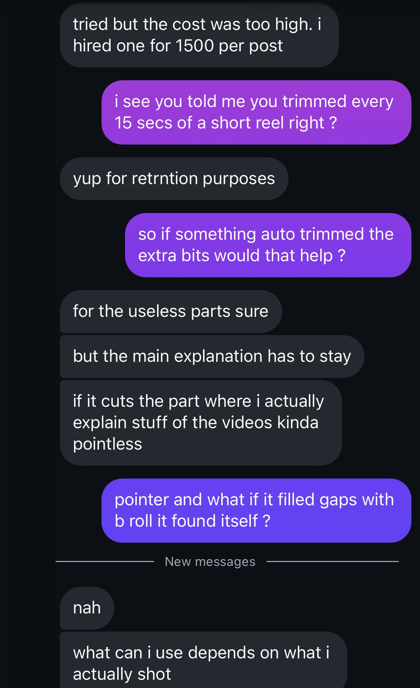
Unedited screenshots of the original Instagram conversation in reading order, cropped only to remove the participant’s name, username and profile pictures. Purple messages are the researcher’s; grey messages are Participant B’s. Consecutive screenshots overlap slightly. The images inside the chat are reaction memes sent during the conversation.
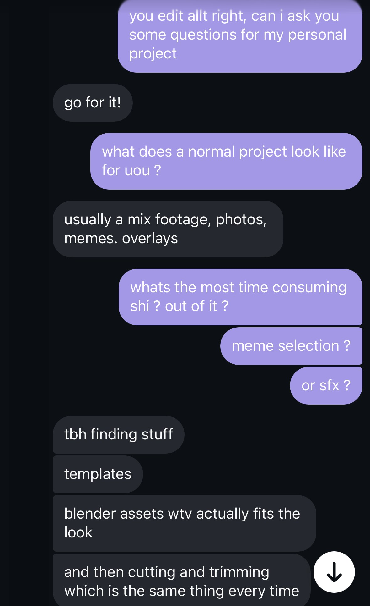
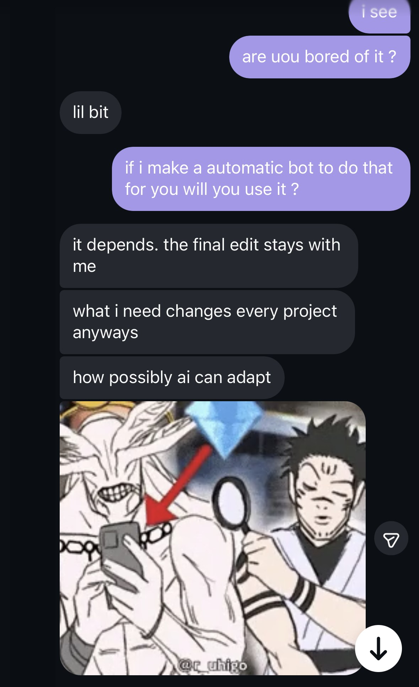
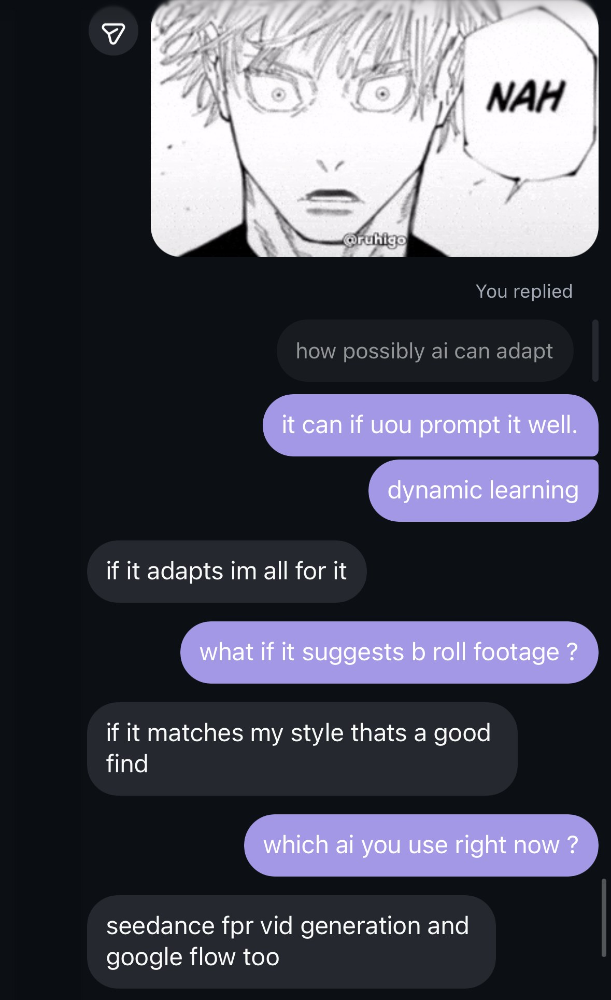
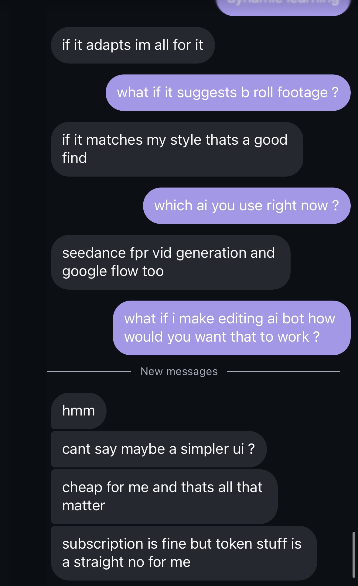